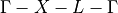

Automatic computation of k-point paths¶
AiiDA provides a number of tools and wrappers to automatically compute k-point paths given a cell or a crystal structure.
The main interface is provided by the two methods aiida.tools.data.array.kpoints.get_kpoints_path()
and aiida.tools.data.array.kpoints.get_explicit_kpoints_path().
These methods are also conveniently exported directly as, e.g., aiida.tools.get_kpoints_path.
The difference between the two methods is the following:
get_kpoints_path()returns a dictionary of k-point coordinates (e.g.{'GAMMA': [0. ,0. ,0. ], 'X': [0.5, 0., 0.], 'L': [0.5, 0.5, 0.5]}, and then a list of tuples of endpoints of each segment, e.g.[('GAMMA', 'X'), ('X', 'L'), ('L', 'GAMMA')]for the  path.get_explicit_kpoints_path(), instead, returns a list of kpoints that follow that path, with some predefined (but user-customizable) distance between points, e.g. something like[[0., 0., 0.], [0.05, 0., 0.], [0.1, 0., 0.], ...].
Depending on how the underlying code works, one method might be preferred on the other.
The docstring of the methods describes the expected parameters. The general interface requires always a StructureData
as the first parameter structure, as well as a string for the method to use (by default this is
seekpath, but also the legacy method implemented in earlier versions
of AiiDA is available; see description below).
Additional parameters are passed as kwargs to the underlying implementation, that often accepts a different number
of parameters.
Seekpath implementation¶
When specifying method='seekpath', the seekpath library is used
to generate the path. Note that this requires seekpath to be installed (this is not available by default, in
order to reduce the dependencies of AiiDA core, but can be easily installed using pip install seekpath).
For a full description of the accepted parameters, we refer to the docstring of the underlying methods
aiida.tools.data.array.kpoints.seekpath.get_explicit_kpoints_path() and
aiida.tools.data.array.kpoints.seekpath.get_kpoints_path(), and for more general information
to the seekpath documentation.
If you use this implementation, please cite the Hinuma paper:
Y. Hinuma, G. Pizzi, Y. Kumagai, F. Oba, I. Tanaka,
Band structure diagram paths based on crystallography,
Comp. Mat. Sci. 128, 140 (2017)
DOI: 10.1016/j.commatsci.2016.10.015
Legacy implementation¶
This refers to the implementation that has been available since the early versions of AiiDA.
Note
In the 3D case (all three directions have periodic boundary conditions), this implementation expects that the structure is already standardized according to the Setyawan paper. If this is not the case, the kpoints and band structure returned will be incorrect. The only case that is dealt correctly by the library is the case when axes are swapped, where the library correctly takes this swapping/rotation into account to assign kpoint labels and coordinates.
We therefore suggest that you use the seekpath implementation, that is able to automatically correctly identify the standardized crystal structure (primitive and conventional) as described in the Hinuma paper.
For a full description of the accepted parameters, we refer to the docstring of the underlying methods
aiida.tools.data.array.kpoints.legacy.get_explicit_kpoints_path() and
aiida.tools.data.array.kpoints.legacy.get_kpoints_path(), and for more general information
to the seekpath documentation.
If you use this implementation, please cite the correct reference from the following ones:
The 3D implementation is based on the Setyawan paper:
W. Setyawan, S. Curtarolo, High-throughput electronic band structure calculations: Challenges and tools, Comp. Mat. Sci. 49, 299 (2010) DOI: 10.1016/j.commatsci.2010.05.010
The 2D implementation is based on the Ramirez paper:
R. Ramirez and M. C. Bohm, Simple geometric generation of special points in brillouin-zone integrations. Two-dimensional bravais lattices Int. J. Quant. Chem., XXX, 391-411 (1986) DOI: 10.1002/qua.560300306